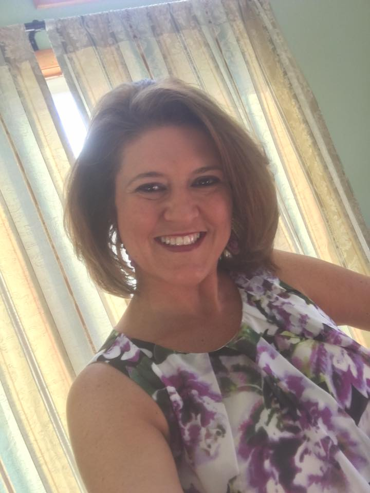
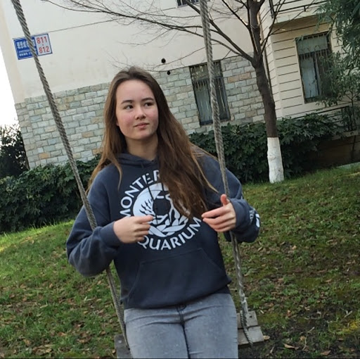
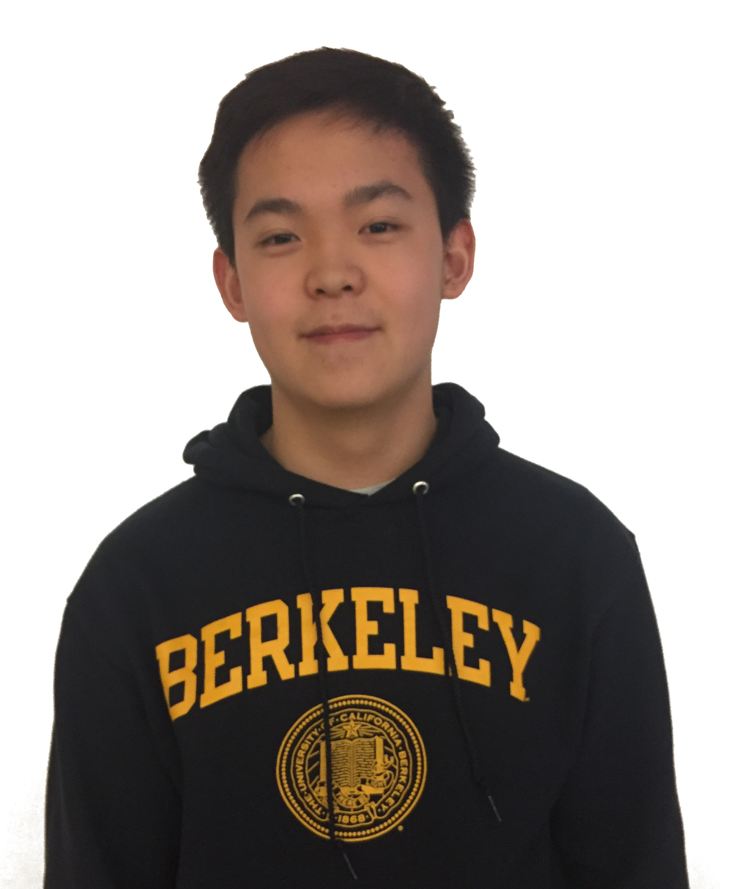
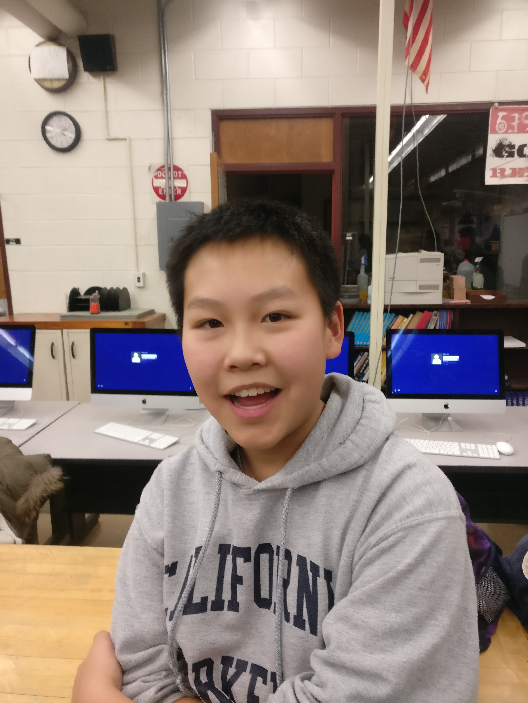
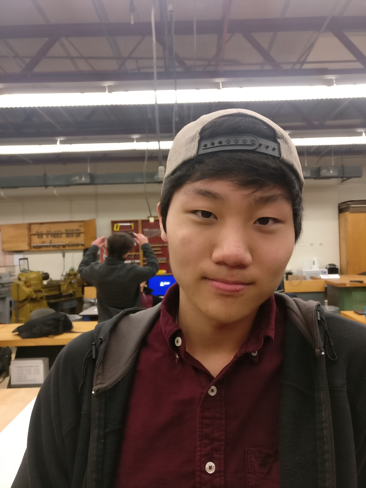

Technology Student Association
Ithaca High School
IHSTSA is led by Mr. Scott Breigle, a new advisor this year. After a CO2 dragster sparked his interest in technology in 6th grade, he went on to study teaching technology at SUNY Oswego, and then to get a masters degree from the Rochester Institute of Technology. At the high school, Mr. Breigle teaches various technology courses including Computer Integrated Manufacturing and Principles of Engineering. Much beloved by his students, Mr. Breigle also is the Engineering Department Head.
Read MoreLuckily, Mr. Breigle agreed to work with IHSTSA at the end of last year and for the entire year this year. A father of young children, Mr. Breigle generously devoted his time to helping our students learn how to use new machines and develop new designs.
Mr. Breigle’s specific focus for IHSTSA this year is building a greater sense of family and community. “With so many students working in small or individual events, students sometimes work in isolation,” he said. This year, students have certainly felt Mr. Breigle’s influence. As Felix Shi stated, “Mr. Breigle really helped to bring TSA together. This year, people are more devoted than past years and really take TSA seriously. It’s a great transformation that the club has experienced.”
When Mr. Breigle isn’t teaching or working on some tech-related thing, he devotes his time to golf, skiing, boating, and woodworking.
My increased interest in STEM happened when I started co-teaching in the technology and engineering classes. I have always liked science and have taught science, but co-teaching in the tech classes really stirred something in me.
A few years ago, Ms. Kiechle served as a chaperone for IHSTSA’s delegation at the TSA National Conference. Since then, her love of TSA has grown and she has added her special education students to the team. “To help support those students and because I like TSA, the students, and the experiences it offers students I became a co-advisor,” said Ms. Kiechle.
This year, as Ms. Kiechle took on new administrative responsibilities, she found that the time she could spend on TSA became severely limited. However, she is still able to make many meetings and participate in many big decisions. Additionally, she noted that “It has worked out that [Mr. Breigle] is comfortable with taking the lead, so I can have increased flexibility with my level of participation.”
In her extremely scarce free time, Ms. Kiechle enjoys spending time with her daughter and the rest of her family. Reading, shopping, painting, and woodworking are favorite ways to spend time.
I like TSA because it allows me to learn new things every year, and use knowledge from all of my classes to make awesome projects.
Jacob Silcoff ‘17, otherwise known as Silky J, is in the middle of his seventh year of TSA and fourth year as a TSA officer, serving as both the president of IHSTSA and New York State TSA. “I like being an officer because it gives me an opportunity to make IHSTSA a more successful club,” Silcoff told us.
Silcoff approaches both TSA and life with a passion for fun, learning, and progress. This has led him to success; in TSA, he has finalized in Debating Technology Issues, System Control, Video Game Design, and Tech Bowl. This passion also contributes to other aspects of Silcoff, like a love of linguistics (among other languages, he studies Mandarin Chinese, French, Latin, and German).
It has also helped Silcoff get elected as the New York State TSA president after proposing a package of technically progressive reforms, like digital event submission and scoring. And at the national level, Silcoff proposed a passing resolution that made business meetings more efficient. Silcoff is known for being a heated debater, and loves to participate in business meetings in the past. He is also trying to amend the TSA creed to be more secular and inclusive to people from outside the United States.
Outside of TSA, Silcoff is most notably in his “Silky J” persona, in which he forces people to rethink opinions by presenting uncommonly heard but well-considered perspectives in his column in the Ithaca High School newspaper.
Silcoff is also an avid debater, catapult builder, snowboarder, and Canadian.
Um… TSA is a lot of fun?
There is a lighthearted je ne sais quoi to Freya Ryd ‘17’s character that makes her a wonderful IHSTSA Vice-President. Perhaps it has something to do with her experience; it is her fourth year as a chapter officer. Or perhaps it is that she’s just fun to be around.
Whatever the reason, Ryd has won not only a plethora of state TSA events ranging from Catapult to Technology Problem Solving, but also finalized in several events at the National Conference, including Techno Talk and Video Game Design. As an officer, Ryd often leads meetings.
Her tech interests seem to be heavily entrepreneurial. In February of 2016, she and a group including two other IHSTSA officers beat roughly a dozen teams of Cornell University Engineering students with a first-place win at a competition in which teams were given 24 hours to prototype and present a product for a tech startup. The surprise win made local papers.
Ryd has spent a fair amount of her life in France, owing to her father’s work at CERN with the Large Hadron Collider. Consequently, she speaks nearly fluent French in addition to English and some German. Her mother is a physicist as well.
Ryd’s primary non-tech related pursuit is horseback riding and, making full use of her lightheartedness, having fun with life. Thus we’re really hoping she’s accepted to her first-choice college, Caltech.
I like TSA because you get to see people being very passionate about the things they're doing.

IHSTSA Treasurer, TSA extraordinaire, and exceptionally fun person—that’s Francesca Chu ‘18. Chu joined TSA in 8th grade and later that year shocked everyone with a stellar performance at the National Conference in Orlando, where she won 1st place in Essays on Technology and finalized in several other events. What’s even more impressive is that her abilities haven’t slipped at all.
Chu favors arts-oriented events like Essays on Technology, Music Production, and Children’s Stories, telling us that she loves how she “can work on something STEM-related through writing, which isn't necessarily what you would expect.” Chu is known for being incredibly talented with language, and is a formidable opponent in any speech/debate and writing competitions.
In addition to working on TSA events, Chu has managed IHSTSA’s finances since 10th grade as the club’s treasurer. “I like being an officer because I like to help other people appreciate TSA as much as I do,” she said. Chu was also serves as the New York State TSA Secretary.
Outside of TSA, Chu is a member of Ithaca High School’s Mock Trial and Quiz Bowl clubs, as well as the editorial board of the school newspaper, the IHS Tattler. She enjoys baking, and reading and writing fiction. Chu also has a fictitious persona as the leader of the Tattler’s ninja-journalist investigative unit.
I like TSA because it gives me a lot of experience in leadership and teamwork.
IHSTSA Secretary Pius Gami ‘18 is one of the most interesting characters in TSA. Gami is known for being funny and coming up with interesting solutions for his problems. For example, to charge his phone, Gami is known for hanging his phone while connected to its charger from a ceiling outlet. Even though Gami is an experienced TSA veteran, this is his first year as a chapter officer. “I like being part of creating plans for upcoming meetings and I like helping out in general,” Gami said.
In his years in TSA, Gami has finalized at nationals in Junior Solar Sprint and Construction Challenge. He has also won a myriad of state-level events. However, Gami has more events to add to his list of trophies: “My favorite event is Problem Solving because I like the process of figuring out a solution to a given problem.”
Gami does not spend all of his time in TSA: he is also a devoted student of mathematics and biology, and a competitive bowler. He does not take life too seriously, easily recovering from his few failures.
It's a fun challenge to post and connect with people around the community.
Tilden Chao ‘19 stepped up this year to be the IHSTSA Reporter. Chao had held the Reporter officer position in middle school, and was familiar with running a crowdfunding campaign. Since then, Chao has assumed the mantle of IHSTSA Reporter, telling us “I like that I'm able to post on social media as a part of my job, so I get to film and take pictures of interesting things. Getting the word out is also one of the more important parts of TSA.”
In TSA events, Chao brings a rare level of intelligence and fun, which have helped him propel teams to finalize at nationals in Biotechnology Design, SCIVIS, and Tech Bowl. Last year, he won an intense TSA duel, beating his older sister, IHSTSA Treasurer Francesca Chu, in Extemporaneous Speech at the New York State Conference.
In addition to IHSTSA, Chao is a member of Ithaca High School’s Student Council and Mock Trial clubs. He also skateboards and plays the saxophone and clarinet.
My favorite event is problem solving because it makes you think on the spot and show how adaptive you can be.
DoHyeong Pak serves as IHSTSA’s Sergeant-At-Arms. It’s a good role for him, considering it requires his ability to “whisper across the library” and maintain an exceptionally positive outlook on life, without requiring a huge deal of experience—Pak is only in his second year of TSA. Even though Pak hasn’t been in TSA very long compared to some veteran members of the team, he fits right in. Pak is known in TSA for being fun-loving, intelligent, and easy to work with.
In just two years, Pak led a team to second place in last year’s New York State TSA Technology Problem Solving competition, barely losing to another team from IHSTSA. The competition was a race to the finish, and even though Pak’s team settled for second place, he is very proud of his team for their accomplishments.
Outside of TSA, Pak is a gamer and has once having held a global top-ten leaderboard position in the video game Brawlhalla. He is also a fan of shōjo anime and one of the most fun people in IHSTSA to get to know.